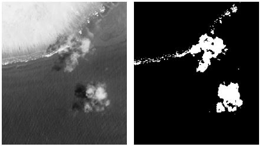
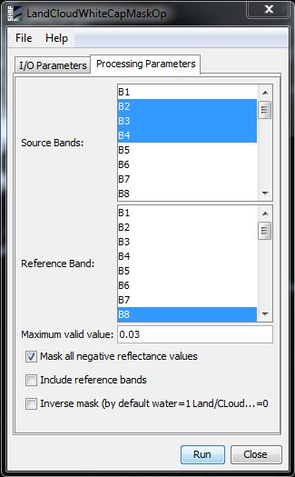

| Land, cloud and white cap mask Algorithm Specification | |
There are three simple processes that can be used to generate a mask layer within Sen2Coral project:
The first two steps work because the near infrared wavelengths do not penetrate into the water, so after deglint is applied clear areas of water appear very dark. Clouds, white caps and land typically have high reflectance in the NIR (Figure below). The third process, manual delineation, is frequently required particularly for cloud shadow. Such areas appear darker than the surrounding area and over reefs they can appear as dark benthic patches even under visual interpretation. Sometimes the only clue that a shadow is present that a cloud of the same shape and relative location can be seen. Masking such features cannot be effectively automated so manual delineation remains required in some circumstances.

The Land, cloud and white cap mask algorithm has been implemented into SNAP with the following features:
| Parameter | Description |
|---|---|
| sunGlintVector | The sample area/s of the image displaying a range of sun glint. This parameters must be the name of a vector data contained in the source product. If the source product does not contain this kind of data, the user should create it previously by creating a new vector data container and adding some areas by using the available tools (Rectangle, Polygon or Ellipse drawing tools) |
| sourceBandNames | The bands to be corrected. The user can select one or more bands. |
| referenceBands | The NIR band to be used as reference. It should have the same raster size than the source bands selected. If the source bands have different raster sizes, it should be selected at least one reference band per each raster size. If they are selected two or more reference bands with the same raster size, only the first of them will be used for the correction. |
| includeReferences | If this option is selected, besides the corrected bands, the bands used as reference will be included in the output product. |
| minNIRString | If the user sets an only value, this value will be used for all reference bands selected. It is possible to use individual values for each reference band by separating them by ';'. If the value is negative, then the minimum in the NIR band over the sample area will be used. |
| maskNegativeValues | If this option is selected, the negative reflectance values generated during the correction will be set to NoDataValue. |
The parameters described above can be set through the graphical user interface designed in the SNAP Desktop component:
